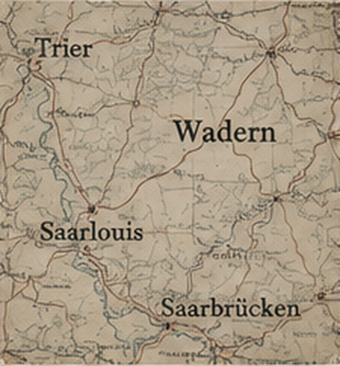
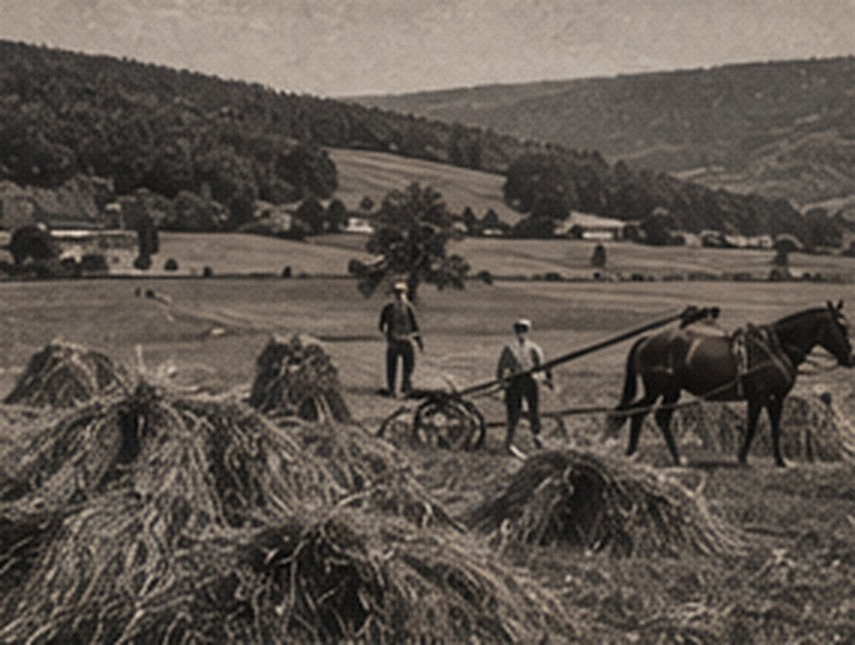
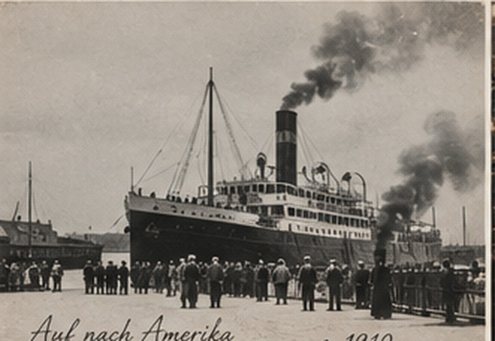
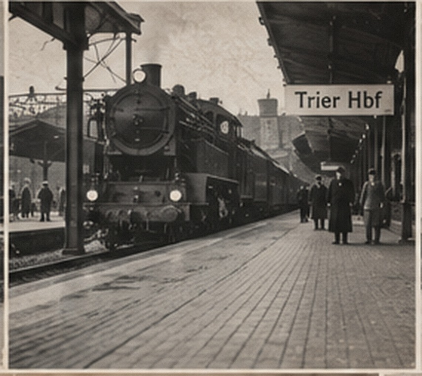
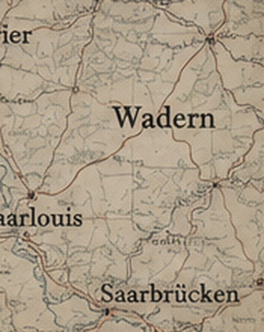

Saarland
Büschfeld / Wadern form the Lauermann homeland research field.
THE GEOGRAPHY SYSTEM
This replaces the decorative map. Each region pairs the name used in the family’s era with its current research frame, then identifies exactly what remains to be located.
EUROPE → AMERICA
Büschfeld / Wadern form the Lauermann homeland research field.
Kurkau, Kreis Neidenburg is a reported Lezer/Grabinski lead.
Brennan, Walsh, and Warren research requires locality-specific proof.
Bridge records connect European-origin research to U.S. life, work, and service.

LAUERMANN
Historical/modern frame: Saarland, Germany. Catholic parish jurisdiction must be identified at the record level for the 1794 baptism search.

LEZER / GRABINSKI
Historical: Kurkau, Kreis Neidenburg, East Prussia. Modern: Poland; exact present-day locality still to confirm.

BRENNAN / WALSH / WARREN
Country-level context only until parish, townland, county, and original evidence establish the family’s specific places.

AMERICAN LIFE
U.S. city directories, employment papers, census, and railroad retirement records are central bridge sources for the later generations.
WHY TWO NAMES MATTER
Borders, jurisdictions, spellings, and parish affiliations can change. The archive stores the historical form of a place alongside the modern search form, rather than silently replacing one with the other.
